Adrien
Sunday, October 23, 2022
#1 TP-Link AC750 Wifi Router
What you need
Here are all the tools you need to perform this kind of IoT Assessment on a device. For my part I didn’t have my soldering kit so I did it without but it was not very stable.
- Basic knowledge on UART ad IOT Hacking
- UART Bridge (Simple USB or Flipper Zero)
- Multimeter
- Cables
- Solder Iron (Optionnal)
- UART Device like Wifi Router
UART ?
If you are not familiar with UART ports, I would recommend you to check my article on Flipper-Zero Section UART USB Bridge
If this is not enough, check out this video of FlashBack-Team Hacker’s Guide to UART Root Shells
TP-Link AC750
Informations
The device I used was a TP-Link Wifi Router AC750
- Supports 802.11ac standard - the next generation of Wi-Fi
- Simultaneous 2.4GHz 300Mbps and 5GHz 433Mbps connections for 733Mbps of total available bandwidth
- 3 external antennas provide stable omnidirectional signal and superior wireless coverage
While doing OSINT on the device, you can easly found internal and externl picture of it.
Each WIFI device has a FCC ID which is very usefull to search specs and internal pictures.
UART port
I was lucky on this one since the UART ports are labeled, so no need to test them with multimeter
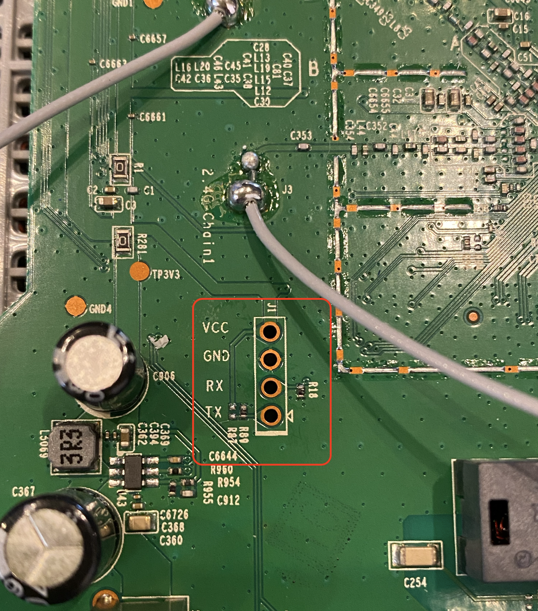
Components
- Wifi Chip - MT7628an
- DDR SDRAM - M14D5121632A
- Wifi Chip - MT7610EN
- Flash - 25Q64CSIG (Back of the PCB)
UART Bridge USB
Here is what my setup looks like. Like you can see I didn’t use any soldering Iron because I didn’t have one during this time.
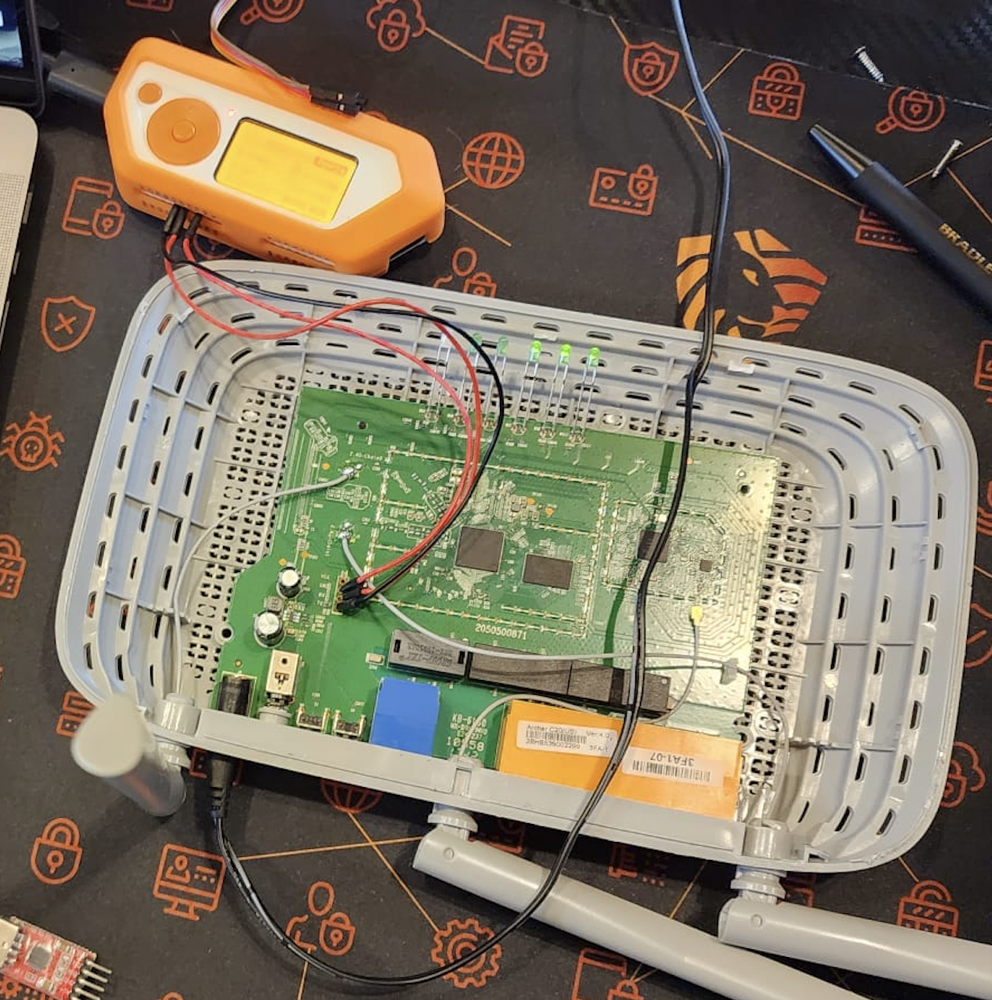
The UART bridge is very simple, here is a small schemas :
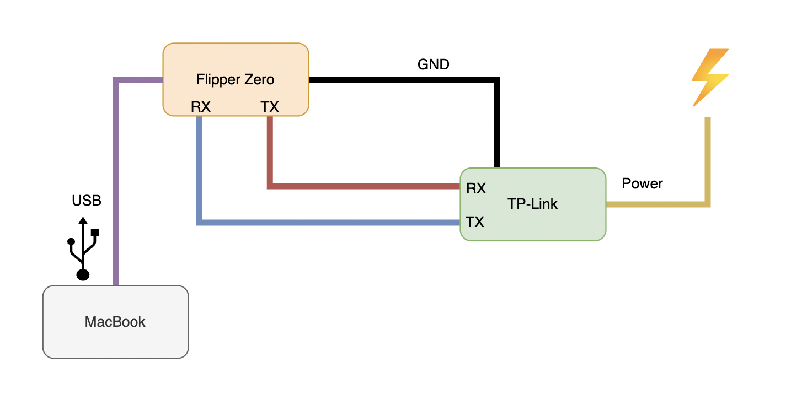
I’ll recommand you to check my post about this part : UART USB Bridge
Using minicom we can get a shell once the device is powered on !
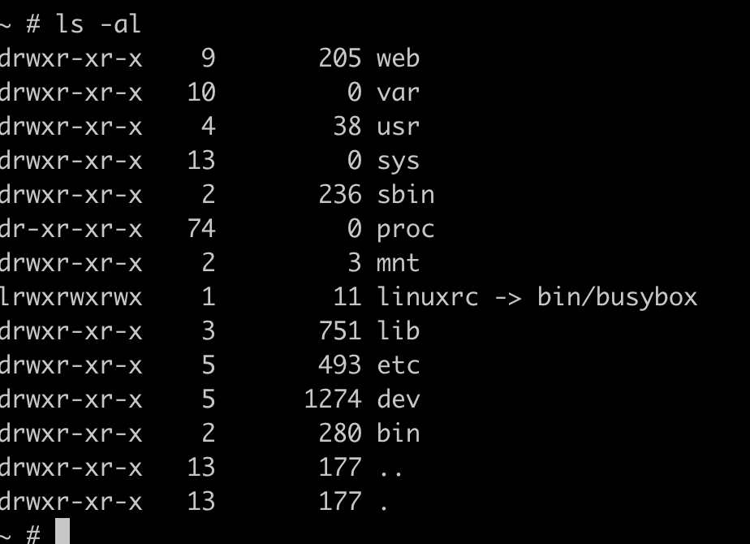
Shell and Enumeration
Let’s start the enumeration part on the device.
Just for the context I didn’t have any password for this Wifi router, SSID passwords and Admin Web password.
The system is on read only so we can’t edit anything unfortunatly.
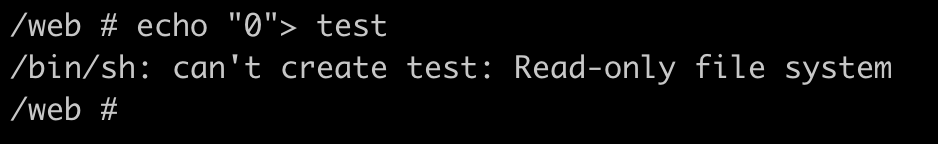
/etc/passwd
The first goodies we can get is the users and the passwords of the system.
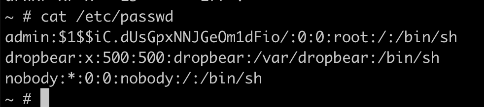
The admin user has its hash on the passwd file and is easly crackable
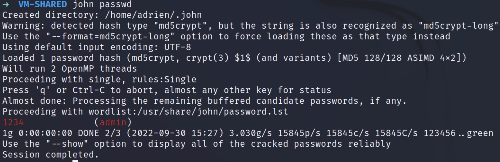
admin:1234–> root account
We can guess that there is a dropbear for SSH Service because of the username but also during the boot of the device, it geneate new RSA keys.
Device information
During my enumeration I could find more precise information about the device.
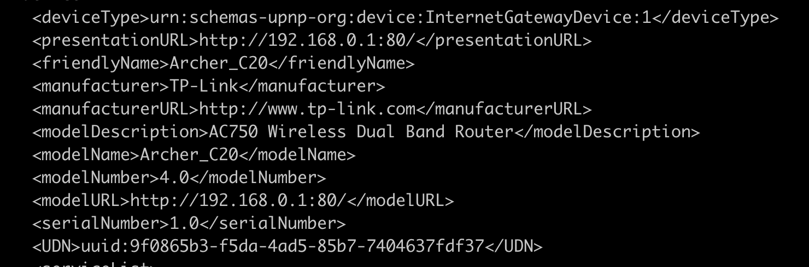
SSID Password
After a while I was able to locate the SSID information and retreive the passwords.
Here is the PATH where to find the password stored in clear text : 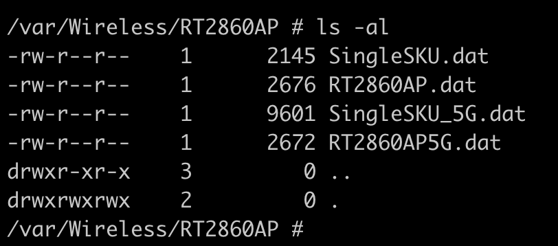
Here is the default SSID password which is 12345678, classic.
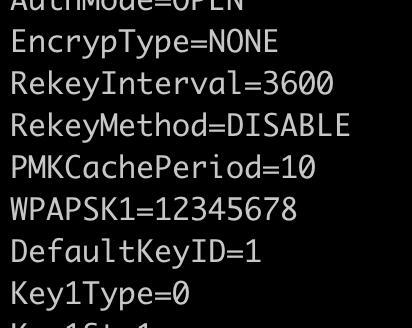
And finally the Password of the SSID that is currently in use on the device.
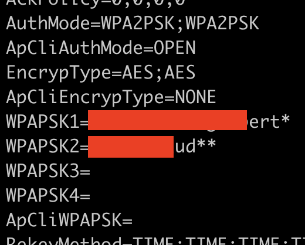
Admin Panel
Since I now have access to the Wifi network I can now get access to the Admin Panel but unfortunatly I need to find a way to grab the admin password !
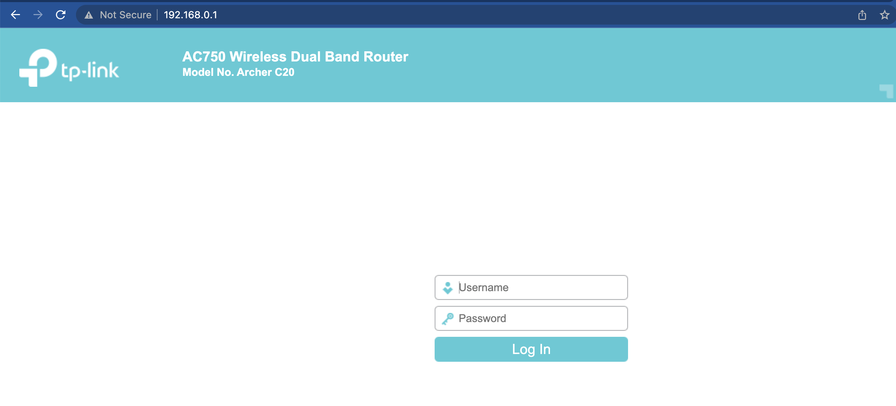
Next time i’ll dig into the admin panel and find maybe a way to get inside (Hardcoded password ?)
See ya !